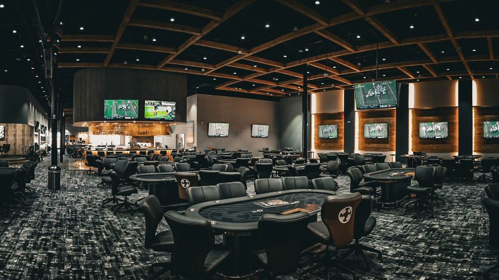

About Me
I'm a mechanical engineer because I love building things. I'm drawn to looking for problems in the world and figuring out how to fix them, and to creating things that genuinely help the people around me. Solving problems is what I enjoy most, and engineering gives me a way to do it that ends in something real.
What pulls me toward robotics specifically is its reach. Robotics can open up possibilities we've barely started to imagine. It's about building systems that interact meaningfully with people and their environments, working on problems that matter and have a larger impact: creating things that solve problems that have never been solved before, or simply making people's work easier.
I'm a third-year mechanical engineering student at the University of Waterloo, and that's the direction I want to keep building toward.

Hobbies & Interests
Captain, UW Varsity Ultimate
As captain of the University of Waterloo varsity ultimate team, I've found that the parts of the sport I enjoy most go well beyond playing. I like building game plans around each player's strengths, figuring out how to put people in positions where they'll succeed and shaping a team strategy around the specific skill set we have. It's a design problem in its own way.
I'm competitive by nature, and ultimate is where I push my physical limits the hardest. I treat every practice as a chance to get stronger and sharper, and I care just as much about improving my game sense: reading the field, anticipating plays, and adapting on the fly to both my teammates and our opponents. Getting measurably better at something I care about is what keeps me coming back.

Strategy & Analytical Thinking
What began as a casual home game with friends, sitting around a table laughing, turned into a genuine analytical hobby. I got captivated by the strategy underneath the game: building models of how opponents play, calculating odds, and finding the weaknesses in someone's approach.
What I enjoy most is the decision-making. Poker is an exercise in reasoning with incomplete information: reading patterns, weighing probabilities, and steering opponents into difficult spots. It rewards discipline, adaptation, and constant self-review, and it's the same kind of structured problem-solving that draws me to engineering.

I'm currently a third-year mechanical engineering student at the University of Waterloo seeking a co-op opportunity where I can contribute to real design and build work.